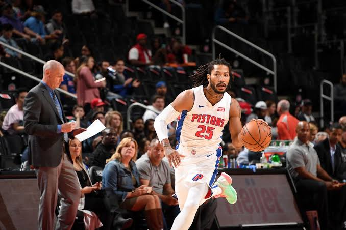

|

|
Derrick Martell Rose (born October 4, 1988) is an American professional
basketball player for the Detroit Pistons of the National Basketball
Association(NBA). He played one year of college basketball for the
Memphis Tigers before being drafted first overallby his hometown
Chicago Bulls in the 2008 NBA draft.[1] After being named the NBA
Rookie of the Year, Rose, at age 22, became the youngest player
to win the NBA Most Valuable Player Award in 2011.
|